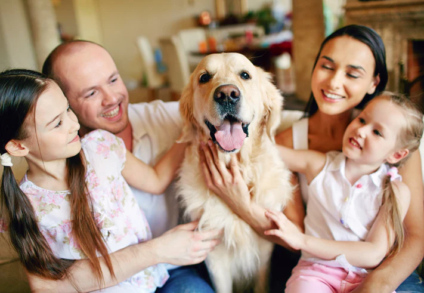
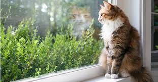
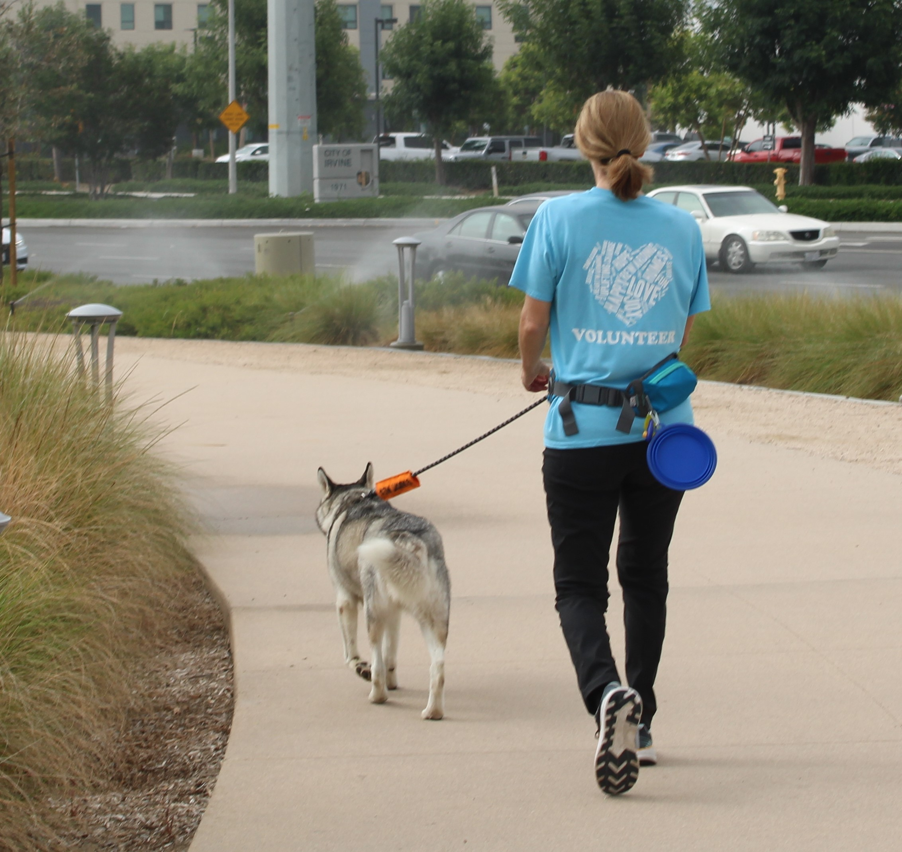

Adoption Support
We help families learn how to choose the right pet for their home and lifestyle.
Green Paw Sanctuary is a fictional nonprofit animal rescue that helps pets receive care, shelter, and a second chance.
Meet Our Pets
We help families learn how to choose the right pet for their home and lifestyle.

Our animals receive food, medical attention, playtime, and a quiet place to rest.

Volunteers help with walks, cleaning, feeding, fundraising, and social events.